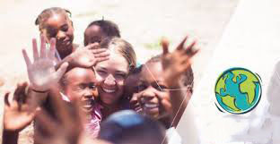

Global Volunteering
Global environmental volunteering project is to enhance peoples understanding of the value of the nature and environmental problems, with changes in their actions and ecological thinking. For that reason. we have been recruiting global volunteers for combating desertification project and mangrove restoration project in china since 2005 Furthermore, we offer the volunteers chances learning global etiquette and mature attitude for international cooperation by global environmental volunteering
Challenge & Goal
Creative Global Ecopeace Leadership
The goal of global volunteering is to strengthen bond among Asia and Africa countries through voluntary activities and academic exchanges for the common future of Asian and Africa. One of the pioneering environmenal NGO in Canada, we provide Canada & China & Africa university students chances that make them being creative global leader with passion, understanding of various cultures and faithfulness, adding enhancement of nation brand of Canada.

1,315 of global volunteers for envrionmental activities
Until now, 1,320 of global volunteers have been participated in Ecopeace Asia and Africa combating deserticifation projects and mangrove restoration projects in China. Particulary, for the combating desertification projects, they have achieved 176.3 km of wall of trees to let the seeds from the wind spontaneously grow in. Participants for the global volunteering share their experiences and discuss what they more can do for the nature, taking further steps for envrionmental-friendly thinking and action.